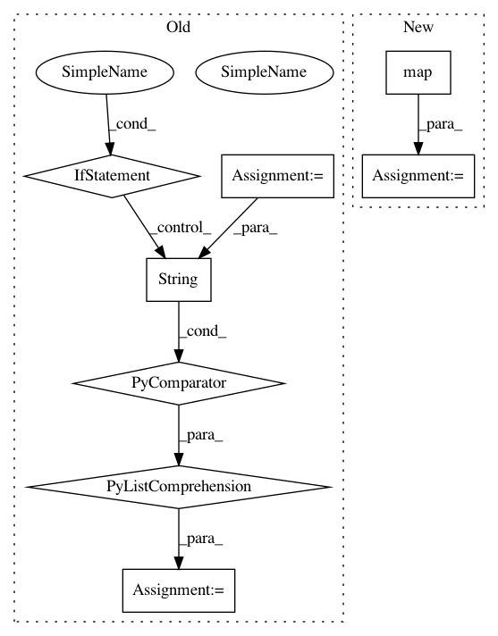

30fed2924d67c3de8800a7999848c297f6956af0,ilastik/applets/dataSelection/dataSelectionGui.py,DataSelectionGui,getImageFileNamesToOpen,#DataSelectionGui#Any#,369
Before Change
fileNames = QFileDialog.getOpenFileNames( self, "Select Images",
defaultDirectory, filt, options=options )
// Convert from QtString to python str
fileNames = [str(s) for s in fileNames]
return fileNames
def _findFirstEmptyLane(self, roleIndex):
opTop = self.topLevelOperator
After Change
fileNames = QFileDialog.getOpenFileNames( self, "Select Images",
defaultDirectory, filt, options=options )
// Convert from QtString to python str
fileNames = map(encode_from_qstring, fileNames)
return fileNames
def _findFirstEmptyLane(self, roleIndex):
opTop = self.topLevelOperator
In pattern: SUPERPATTERN
Frequency: 3
Non-data size: 8
Instances
Project Name: ilastik/ilastik
Commit Name: 30fed2924d67c3de8800a7999848c297f6956af0
Time: 2013-08-29
Author: bergs@janelia.hhmi.org
File Name: ilastik/applets/dataSelection/dataSelectionGui.py
Class Name: DataSelectionGui
Method Name: getImageFileNamesToOpen
Project Name: dataiku/dataiku-contrib
Commit Name: 42910c039a97258e27f01949a35ecde2faf46ef5
Time: 2018-11-15
Author: redaffane@gmail.com
File Name: sentence-embedding/custom-recipes/sentence-embedding-similarity/recipe.py
Class Name:
Method Name:
Project Name: dataiku/dataiku-contrib
Commit Name: 2de92392c7c725299874ad25c53d9349a2536042
Time: 2018-11-13
Author: redaffane@gmail.com
File Name: sentence-embedding/custom-recipes/sentence-embedding-similarity/recipe.py
Class Name:
Method Name: